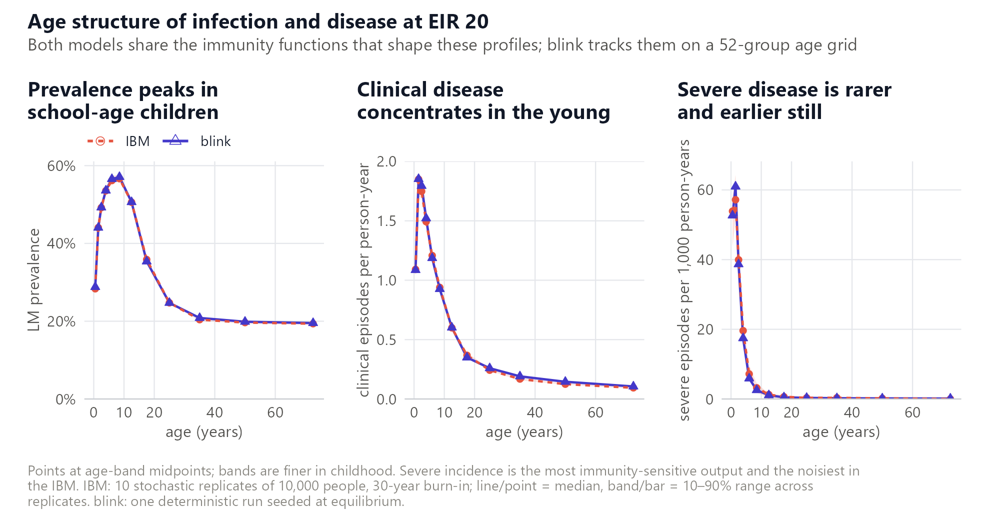
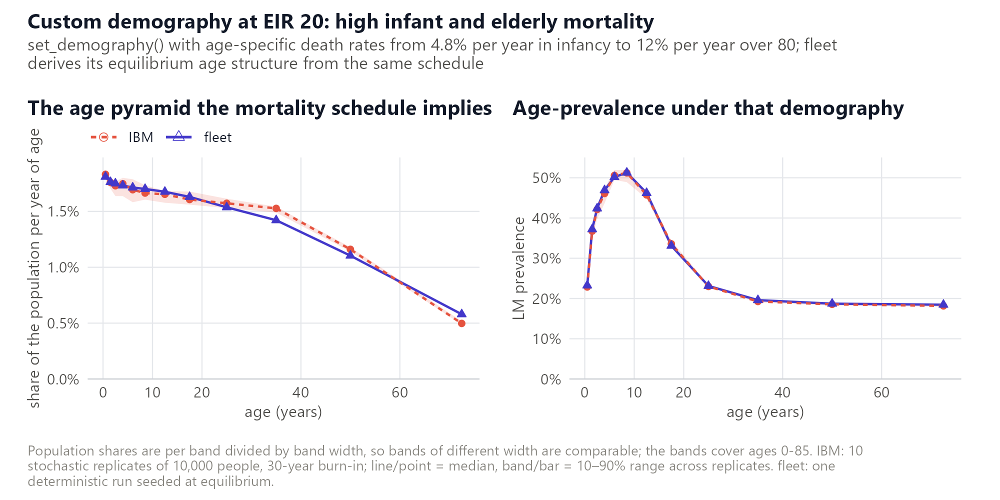
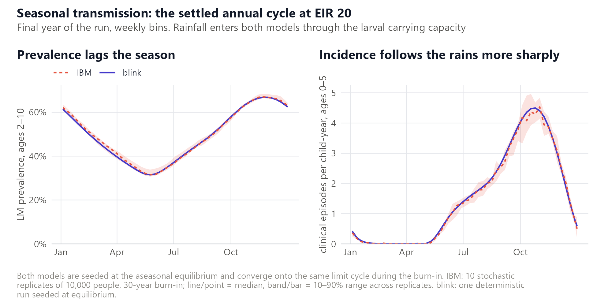
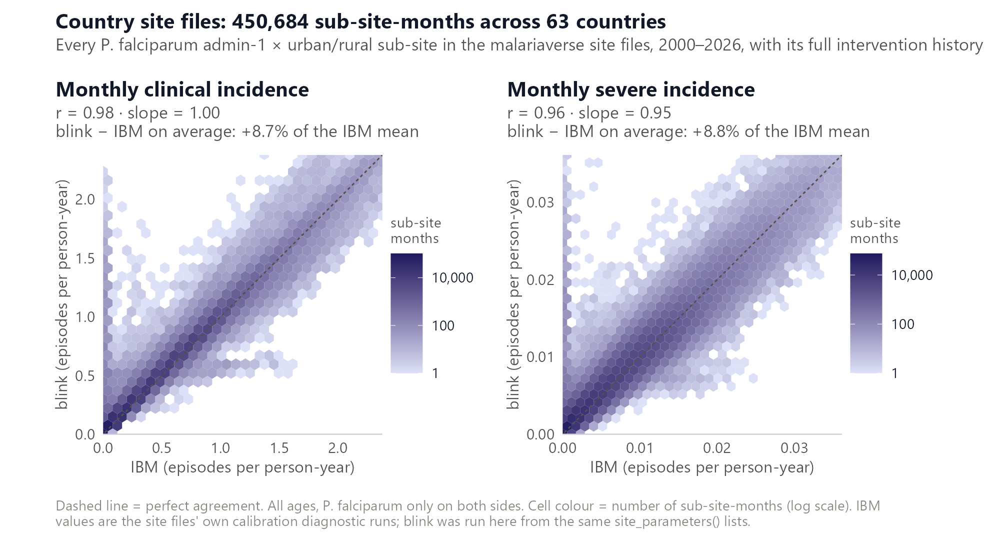
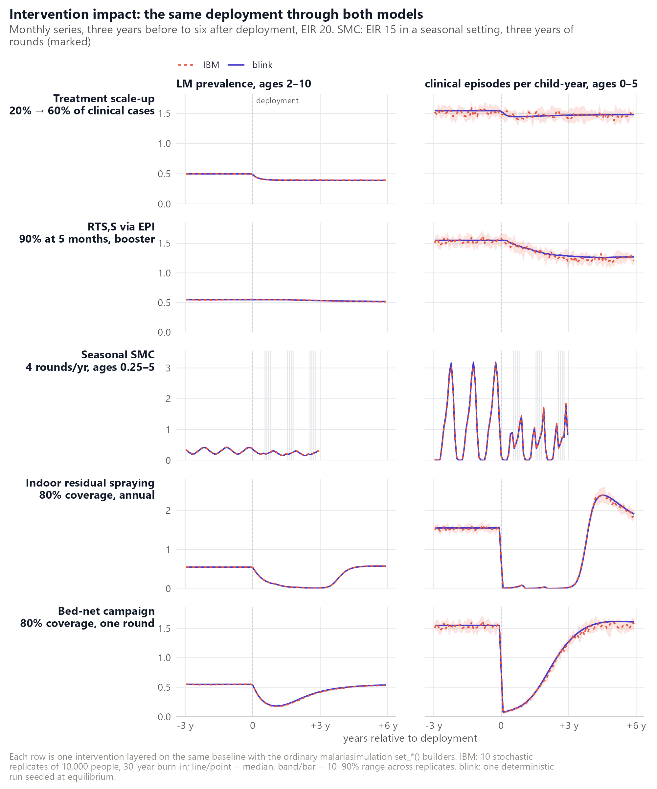

⚠️ Work in progress: not ready for real use.
fleetis published early so the approach, and the comparison set out below, can be examined and argued with, not so that anyone can rely on its numbers: the API is unstable and nothing here has been peer reviewed. The discrepancies reported on this page are open rather than resolved, the largest being all-age severe incidence, which runs about 4 to 6% below the IBM, alongside a roughly 9% excess on clinical and severe incidence across the 63-country site files that is not yet explained. The full statement is on the package front page; if you need results you can defend today, use malariasimulation.
fleet is meant to be a drop-in mean-field twin
of the malariasimulation
individual-based model (IBM): hand both the same parameter list and they
should tell the same epidemiological story, with fleet
finishing in seconds and without Monte-Carlo noise.
Every panel below runs the identical
malariasimulation parameter list through both
models: first the core equilibrium relationships, then a battery of
interventions. fleet has no free parameters of its own, so
none of the agreement here is tuning.
How to read the figures
The IBM is stochastic and is never shown as a single run. Each IBM
curve is the median of ten replicates, with a shaded
band (or a bar) spanning the 10th to 90th percentile across them;
fleet is deterministic and is drawn as one line.
A 10,000-person IBM run is a small sample for rare outcomes, so severe incidence, narrow age bands and dry-season troughs carry visible Monte-Carlo noise. The replicate band, not the median, is the yardstick for what counts as a difference.
Colour (coral IBM, indigo fleet), line type (dashed,
solid) and point shape (circle, triangle) each encode the model, so
every panel reads in greyscale and under colour-vision deficiency.
Set-up
Both models receive the output of
malariasimulation::get_parameters() with a population of
10,000, followed by set_equilibrium(init_EIR = ...) and,
for the intervention scenarios, the ordinary set_*()
builders.
malariasimulation (IBM) |
fleet (ODE) |
|
|---|---|---|
| Runs per scenario | 10 stochastic replicates, seeds 1000 + 7k
|
1 (deterministic) |
| Population | 10,000 people | population-free (per-capita densities) |
| Initial state |
malariaEquilibrium seed, then a 30-year
burn-in so each replicate reaches its own stochastic steady
state |
malariaEquilibrium seed; integrated over the same
30-year horizon |
| Observation window | final 3 years (equilibrium quantities); monthly and weekly bins for time series | identical |
| Interventions | deployed at year 30, followed for 6 years | identical |
| Output age bands |
*_rendering_min/max_ages set once on the shared
parameter list |
identical columns |
| Numerics | daily time step | adaptive solver, atol = 1e-8, rtol = 1e-6,
step_size_max = 10 days |
The intervention scenarios, each layered on the EIR 20 baseline unless stated:
| Scenario | Deployment | Builder calls |
|---|---|---|
| Treatment scale-up | coverage of clinical cases 20% -> 60% at year 30 (AL) |
set_drugs(list(AL_params)),
set_clinical_treatment(coverages = c(0.2, 0.6))
|
| RTS,S via EPI | 90% of infants at 5 months from year 30; one booster 12 months later at 80% | set_pev_epi(rtss_profile, booster_profile = list(rtss_booster_profile)) |
| Seasonal SMC | EIR 15 in a seasonal setting; 45% treatment with SP-AQ; 4 monthly rounds per year for 3 years, 90% coverage, ages 3 months to 5 years |
set_drugs(list(SP_AQ_params)),
set_clinical_treatment(0.45), set_smc()
|
| Indoor residual spraying | 80% coverage, three annual rounds from year 30 (Actellic-like decay parameters) | set_spraying() |
| Bed-net campaign | one round at 80% coverage in year 30, 5-year mean retention, standard pyrethroid net parameters | set_bednets() |
The seasonal setting uses a single-peaked Fourier rainfall profile
(g0 = 0.285, g = c(-0.33, -0.13, 0.052),
h = c(-0.35, 0.020, 0.10)) with
model_seasonality = TRUE.
Core relationships
Transmission intensity
How prevalence, clinical incidence and severe disease scale with the entomological inoculation rate: the backbone of any malaria model.
![Four panels on a shared log EIR axis, IBM circles with replicate range bars against fleet triangles. Top left: LM parasite prevalence in 2-10 year olds rising from about 11% at EIR 1 to about 79% at EIR 120, the two models coincident. Top right: clinical episodes per child-year in under-5s rising from 0.16 to 2.9 and flattening at the top of the range. Bottom left: clinical episodes per person-year across all ages rising from 0.21 to only 0.81 and flattening much earlier, with fleet a shade below the IBM above EIR 10. Bottom right: severe episodes per 1,000 person-years, a hump that rises to about 9-9.6 around EIR 20-50 and falls back by EIR 120, with fleet running just below the IBM over the plateau.](cmp_core_eir.png)
Across the 120-fold range the prevalence and under-5 clinical curves
lie on top of each other. The largest gap in PfPR2–10 is
0.004 (0.237 against 0.240 at EIR 3), and fleet sits inside
the IBM’s 10–90% replicate band at every EIR.
Under-5 clinical incidence runs 0.7–2.6% above the IBM median: inside the band at five of the six EIRs, and 0.1% above its upper edge at EIR 120, where ten replicates pin the IBM to within about ±1%. Both models realise the EIR they were asked for to within about 1%, so the x-axis is a fair one.
| EIR | IBM PfPR2–10, median (10–90%) |
fleet PfPR2–10
|
IBM clinical, ages 0–5, per child-year |
fleet clinical |
realised EIR, IBM / fleet
|
|---|---|---|---|---|---|
| 1 | 0.115 (0.107–0.118) | 0.114 | 0.16 (0.15–0.17) | 0.16 | 1.0 / 1.0 |
| 3 | 0.240 (0.231–0.245) | 0.237 | 0.42 (0.39–0.44) | 0.42 | 3.0 / 3.0 |
| 10 | 0.427 (0.418–0.435) | 0.428 | 1.02 (1.00–1.05) | 1.05 | 9.9 / 10.0 |
| 20 | 0.548 (0.544–0.552) | 0.548 | 1.52 (1.48–1.55) | 1.55 | 20.1 / 20.0 |
| 50 | 0.684 (0.678–0.694) | 0.686 | 2.27 (2.23–2.33) | 2.31 | 50.0 / 50.1 |
| 120 | 0.786 (0.781–0.791) | 0.786 | 2.84 (2.81–2.86) | 2.86 | 121.3 / 120.4 |
Widening the window to all ages changes the shape of the relationship, not just its level, and both models change shape the same way. All-age clinical incidence spans only 0.21 to 0.81 episodes per person-year – 3.8-fold against 18-fold in under-5s – because most transmission added above EIR 20 lands on people who are already immune. At EIR 1 the all-age rate (0.21) is higher than the under-5 rate (0.16); by EIR 120 it is under a third of it.
Severe incidence is not monotonic at all. In both models it climbs to a plateau of about 9–9.6 per 1,000 person-years around EIR 20–50, then falls back by EIR 120 as immunity outruns exposure.
| EIR | IBM clinical, all ages, per person-year (10–90%) |
fleet clinical |
IBM severe, all ages, per 1,000 person-years (10–90%) |
fleet severe |
|---|---|---|---|---|
| 1 | 0.208 (0.198–0.218) | 0.213 | 4.73 (4.20–5.08) | 4.69 |
| 3 | 0.388 (0.368–0.400) | 0.386 | 6.51 (5.83–6.97) | 6.52 |
| 10 | 0.585 (0.577–0.595) | 0.585 | 8.39 (7.83–8.90) | 8.38 |
| 20 | 0.692 (0.675–0.699) | 0.683 | 9.63 (9.05–9.99) | 9.03 |
| 50 | 0.785 (0.774–0.789) | 0.772 | 9.53 (9.18–10.03) | 9.15 |
| 120 | 0.822 (0.801–0.840) | 0.811 | 8.81 (8.23–9.64) | 8.40 |
Agreement on the all-age outcomes is looser, and leans the other way.
fleet’s all-age clinical incidence runs −1.6% to +2.1% of
the IBM median: inside the replicate band at five of the six EIRs, and
0.2% below its lower edge at EIR 50. The small excess it carries in
under-5s is more than repaid at older ages. Decomposing the EIR 20 gap
band by band, 5–20 year olds account for more than the whole −1.3%
deficit, partly offset by adults, where fleet runs
higher.
All-age severe incidence is where fleet sits furthest
below the IBM: −6.2% at EIR 20, −4.0% at EIR 50 and −4.6% at EIR 120. It
falls just outside the 10–90% band at EIR 20 and EIR 50 (by 0.2% and
0.4% of the lower edge), inside it at the other four. Both curves still
flatten over EIR 20–50 and fall away by EIR 120. About half the gap
comes from the under-5 bands and the rest from 5–20 year olds.
That deficit is larger than it was before the
incidence-hazard correction in NEWS.md, and deliberately
so. fleet used to count severe and all-infection episodes
with the raw force of infection rather than the deduplicated per-day
probability. Correcting that removed a genuine +2.6% to +4.2% excess on
all-infection incidence, and with it a small upward bias that had been
masking part of this severe deficit. The gap is therefore real, and not
an artefact of the hazard convention.
Age structure
At EIR 20 the models are compared across twelve age bands, finer in childhood where the profiles turn over quickly.

Prevalence agrees to within 0.005 in every band.
Clinical incidence under 20 years, where the rates are large enough
for a relative comparison to mean anything, is within −4.9% (15–20
years) to +2.6% (2–3 years) of the IBM median. Above 20,
fleet runs 7–16% higher in relative terms, but the rates
are small: the absolute gap is at most 0.023 episodes per person-year,
in 30–40 year olds, the tail of the same slight excess seen against
EIR.
Severe incidence is where the two models are least alike. In the
under-5 bands, which carry most severe episodes, fleet is
within −11% to +6.3% of the IBM (52.5 against 53.9 per 1,000
person-years in infants; 60.8 against 57.2 at 1–2 years). Between 5 and
20 years it falls off faster with age than the IBM – 15–25% lower –
though these bands hold a handful of events per replicate (5.9 against
7.2 per 1,000 at 5–7 years; 0.48 against 0.64 at 15–20).
fleet lies inside the IBM’s 10–90% band in 11 of the 12
bands, the exception being 5–7 years.
Demography
The default runs use malariasimulation’s constant-hazard
demography. With set_demography() the IBM instead kills
people by age-specific death rates and its age pyramid emerges from that
schedule; fleet derives the equilibrium age structure
analytically from the same rates. The scenario below uses a deliberately
harsh schedule (4.8% per year in infancy, under 1% through the working
ages, 12% per year over 80) at EIR 20.

Left: the age pyramid. The IBM’s structure is not yet stationary: it starts from the default exponential age distribution, so after 30 years only people under 30 have lived their whole lives under the custom schedule. Even so it sits close to the analytic stable structure the death rates imply (13.1% of the 0–85 population aged 60–85, against the IBM’s 12.4%).
fleet’s equilibrium structure matches band for band
through childhood and adolescence (under-5 share 8.8% in both) and runs
one to two points heavier in the oldest bands (14.5% aged 60–85). That
residual is the price of coarse 5-year age groups above 15: exponential
dwell times let some people linger past the age at which the schedule
would have removed them, and the open-ended 80+ group is all counted in
the 60–85 band.
Right: age-prevalence. The two curves agree to under 0.01 at every age, and that agreement hides a convention worth knowing about.
malariasimulation’s set_equilibrium() sizes
the mosquito population from the equilibrium under its default
exponential age structure. Run under the custom mortality, with far
fewer highly infectious young children, the IBM drifts to a new steady
state: an annual EIR of 13.8 rather than 20, and PfPR2–10 of
0.49 rather than 0.55.
fleet reproduces that mosquito density exactly and seeds
at the EIR its own equilibrium under the custom age structure then
supports (13.9), so the same parameter list realises the same
transmission in both models. An earlier version held
init_EIR = 20 exactly and sat 0.06–0.08 above the IBM
through childhood here; that behaviour is still available via
parameters$hold_init_EIR = TRUE.
Seasonality
Seasonal forcing enters both models the same way – rainfall scales
the larval carrying capacity – but they propagate it very differently:
individual mosquitoes and people with sampled delays in the IBM, Erlang
lag chains and a fixed-delay extrinsic incubation period in
fleet.

The settled cycles coincide. Peak prevalence is 0.670 in the IBM and
0.668 in fleet, in the same week of the year; the trough is
0.315 in both, one weekly bin apart. Under-5 clinical incidence peaks at
4.53 against 4.50 episodes per child-year, again one bin apart, and the
annual mean is 1.50 against 1.54 (+2.7%).
Both models realise an annual-mean EIR of 18.7 against the aseasonal target of 20 – the same nonlinear-averaging shortfall in each – and an annual-mean PfPR2–10 of 0.492 (IBM; 10–90% range 0.484–0.499) against 0.490. The transient is shared too: seeded at the aseasonal equilibrium, both models’ annual-mean prevalence drops from 0.50 to 0.48 in the first year and settles within a few years.
Country site files
The equilibrium scenarios are clean but artificial. The harder test
is the real-world parameter lists the malariaverse produces
for every administrative-1 x urban/rural sub-site of every
malaria-endemic country, each with its own seasonality, demography,
treatment history and years of vector-control and chemoprevention
deployment. fleet was run from the same site::site_parameters()
lists that feed the IBM’s own calibration runs, and the two were
compared monthly: annual means would hide the seasonal
cycle, where a mean-field model is most likely to slip.

This one is a snapshot, and you cannot reproduce it. Every other figure here is redrawn from committed per-replicate summaries, and a drift check re-runs
fleetagainst them on demand. This comparison cannot work that way: it is a roughly seven-hour run against the malariaverse site files, driven by a separate harness calledfleet_validatethat is not public and has no repository to clone. Its whole public record is the committed summarycomparison/data/site_snapshot.json, which carries the statistics quoted below, and the committed PNG above; neither is regenerated by an ordinary render. Because the snapshot is re-taken deliberately rather than kept in step, it describes thefleetversion recorded in it, which may be behind the code you are reading about. Treat it as evidence that the approach holds up across real settings, not as a live check on the current model.
Across 450,684 sub-site-months in 1,391 sub-sites of 63 countries, monthly clinical incidence correlates at r = 0.98 with a regression slope of 1.00, and monthly severe incidence at r = 0.96 with a slope of 0.95. The two models agree on how incidence scales with transmission and responds to the intervention histories, on real seasonality and demography and with every intervention builder exercised at once: treatment histories, net distributions, IRS, SMC, PMC and RTS,S.
There is, however, a systematic offset. fleet sits
8.7% above the IBM on average for clinical incidence
and 8.8% for severe. With the slope at unity that excess is an intercept
– a few hundredths of an episode per person-year – which matters most in
low-incidence sub-sites and dry-season months and hardly at all where
incidence is high.
Every site file uses set_demography(), so the
mosquito-sizing convention described under Demography was an
obvious suspect. It is not the answer. Re-running the 63 countries with
the convention switched on and off, the prophylaxis chains moved the
clinical excess from +10.1% to +9.4% and the sizing convention from
+9.4% to +8.7% (slope 1.02 → 1.00). Each explains under a point, and the
remaining ~9% is not yet understood.
Intervention impact
Interventions are where the mean-field approximation has to earn its
keep. Each scenario is layered on the same baseline with the ordinary
set_*() builders and followed from three years before to
six years after deployment.

| Scenario | What both models do | Where they differ |
|---|---|---|
| Treatment scale-up | PfPR2–10 0.50 -> 0.39 (20% baseline case management already holds it at 0.50); under-5 clinical incidence almost untouched, down 4–5%, because clearing more infections also erodes clinical immunity and the two effects nearly cancel | nothing visible |
| RTS,S via EPI | protects one birth cohort at a time, so under-5 incidence drifts down as vaccinated children accumulate, 1.55 to about 1.2 per child-year by year six; PfPR2–10 barely moves |
fleet tracks the IBM median through the ramp and ends
marginally higher, 1.27 against 1.20 |
| Seasonal SMC | a sharp drop at each round, climbing back between the monthly rounds |
fleet is within 1% of the IBM median on post-deployment
under-5 incidence, with a slightly sharper rebound after the season’s
last round |
| Indoor residual spraying | three annual rounds take PfPR2–10 to ~0.01 by year three; as the third round wanes both rebound together and overshoot the pre-intervention rate (2.39 per child-year at +4.5 years, against a baseline of 1.55), clinical immunity having drained during the suppression | nothing visible |
| Bed-net campaign | one round, five-year mean retention: PfPR2–10 to 0.17–0.18 and under-5 incidence to 0.08 by year one, then recovery along the same curve as the nets age | by year six fleet is fractionally above the IBM,
prevalence 0.538 against 0.529 |

| Scenario | Outcome | IBM reduction, median (10–90%) | fleet |
|---|---|---|---|
| Treatment scale-up | PfPR2–10 | 19% (18–20%) | 19% |
| clinical, 0–5 | 4% (1–6%) | 5% | |
| clinical, all ages | 4% (2–6%) | 5% | |
| severe, all ages | −7% (−12–6%) | 3% | |
| RTS,S via EPI | PfPR2–10 | 0% (−1–2%) | 1% |
| clinical, 0–5 | 10% (9–12%) | 10% | |
| clinical, all ages | 5% (4–7%) | 5% | |
| severe, all ages | 10% (7–20%) | 10% | |
| Seasonal SMC | PfPR2–10 | 23% (22–26%) | 24% |
| clinical, 0–5 | 52% (51–54%) | 54% | |
| clinical, all ages | 25% (24–26%) | 26% | |
| severe, all ages | 33% (32–42%) | 38% | |
| Indoor residual spraying | PfPR2–10 | 79% (78–79%) | 79% |
| clinical, 0–5 | 97% (97–98%) | 98% | |
| clinical, all ages | 97% (97–98%) | 98% | |
| severe, all ages | 97% (97–97%) | 97% | |
| Bed-net campaign | PfPR2–10 | 48% (47–49%) | 46% |
| clinical, 0–5 | 66% (65–67%) | 66% | |
| clinical, all ages | 67% (66–67%) | 66% | |
| severe, all ages | 50% (44–53%) | 49% |
Summarised as the reduction over the first three post-deployment
years relative to the three years before, fleet
lands inside the IBM’s 10–90% replicate range in 16 of the 20 scenario ×
outcome cells, and within 0.6 percentage points of the band in
the other four (bed-net prevalence; IRS prevalence and both clinical
outcomes). On clinical incidence and prevalence the two models agree to
within two percentage points everywhere.
The four panels also show who each intervention protects, and the two models agree on that. SMC and RTS,S are targeted, so their all-age clinical effect is roughly half their under-5 effect (SMC 25% against 52%; RTS,S 5% against 10%): they protect a slice of the population and the rest carries on as before. Nets and IRS are not, and suppress transmission for everyone, so the all-age and under-5 reductions match, at about 66% and 97%.
The one genuine disagreement in sign is treatment scale-up on
severe incidence: the IBM’s median says severe disease
rises by 7%, fleet’s single run says it falls by
3%. Both lie within the IBM’s own replicate range, which spans −12% to
+6%, so neither model resolves the sign in the noisiest cell in the
figure.
The mechanism behind the ambiguity is real, though. Treating more clinical cases removes infections, which lowers exposure, which erodes the acquired immunity that protects against severe disease. Severe incidence is the most immunity-sensitive output in either model, so it is where a small difference in the immunity treatment shows up first.
Seasonal SMC deserves a note: it was the one intervention this
comparison caught fleet getting wrong. The IBM applies a
Weibull protection curve to each treated child – for SP-AQ, shape 4.3
and scale 38.1 days, leaving 70% protected 30 days after a round.
An earlier fleet decayed its chemoprevention-prophylaxis
compartment exponentially at the Weibull mean, which protects only 42%
at 30 days. Protection leaked between monthly rounds: the under-5
clinical reduction came out at 40% against the IBM’s 52%, with
between-round incidence about twice the IBM’s.
Prophylaxis is now an Erlang chain moment-matched to the Weibull (14 stages for SP-AQ), and each round renews the protection of children still covered from the previous one. The gap has closed to 54% against 52%, with between-round incidence within a few percent of the IBM median all season. The chain still differs from the Weibull in its far tail, which is the small residual that remains.
Programmes over fifteen years
Everything above isolates one builder over six years. A programme is longer and messier: several interventions together, campaigns repeating, protection decaying and being renewed, over a horizon where immunity can respond to the transmission removed.
Five scenarios do that, all at EIR 20 in the seasonal setting and all carrying 20% baseline case management, so each is the one before it plus one more thing.
![A five-row by four-column grid of monthly time series over fifteen years, IBM dashed coral against fleet solid indigo, the two almost indistinguishable in every panel. Rows: no interventions, bed nets only, seasonal SMC only, case management only, all three together. Columns: LM prevalence in 2-10 year olds, clinical incidence in under-5s, clinical incidence over all ages, severe incidence over all ages. The no-intervention row is a stable seasonal cycle. The bed-net row shows prevalence dropping at each of five campaigns and climbing back between them, a sawtooth. The SMC row suppresses under-5 clinical incidence sharply while all-age clinical incidence moves much less. The case-management row lowers prevalence but leaves clinical incidence nearly unchanged. The combined row is the deepest and most sustained suppression.](cmp_programme_ts.png)
The two models stay together for the whole fifteen years, through
five net distributions, sixty SMC rounds and a treatment scale-up.
Across the 915 scenario-months in each panel column, fleet
sits inside the IBM’s 10–90% replicate band in 83% of
them for prevalence, 84% for both clinical measures and 78% for severe
incidence. Since an 80% band contains a perfectly-tracking deterministic
mean about 80% of the time by construction, those are at the target
rather than short of it.
On the summary a programme would actually be judged by – the mean burden over the fifteen years, against the no-intervention reference – the largest disagreement anywhere in the sixteen scenario × outcome cells is 1.8 percentage points.
Those in-band fractions are only meaningful alongside how wide the band is. Over the months carrying the top quartile of burden, the IBM’s 10–90% replicate range is 26% of the panel peak for severe incidence, against 3–7% for the other three. Severe is the noisiest because it is the rarest: in a population of 10,000 a 30-day bin holds only about 20 severe episodes even at the seasonal peak, so Monte-Carlo noise on it is irreducible without more replicates.
| scenario | PfPR2–10 | clinical, 0–5 | clinical, all ages | severe, all ages |
|---|---|---|---|---|
| Bed nets, 5 campaigns | 48% / 46% | 62% / 62% | 51% / 51% | 33% / 33% |
| Seasonal SMC | 28% / 29% | 50% / 51% | 17% / 19% | 22% / 23% |
| Case management | 29% / 30% | 13% / 15% | 8% / 9% | 6% / 5% |
| All three together | 76% / 76% | 87% / 87% | 68% / 69% | 56% / 57% |
15-year mean reduction against the no-intervention row, IBM /
fleet.
The rows also say what each tool buys, and both models say it identically. Nets are the only intervention here that lowers transmission itself, and the sawtooth shows the cost: prevalence falls to about 9–11% within a year of each distribution and is back to 43% before the next one three years later, in both models.
SMC and case management barely touch transmission. SMC halves under-5 clinical incidence but cuts all-age clinical incidence by only about a fifth, because it protects a narrow age band; case management barely moves clinical incidence in any band (8–15%) while lowering prevalence by roughly 30%, since treating an episode shortens an infection without preventing the next one.
Combining all three is worth more than any of them alone (76% on prevalence, 87% on under-5 clinical) but visibly less than their sum, and the two models agree on that interaction to within a percentage point.
Where the two models differ
The gaps above are systematic rather than random.
vignette("using") sets out each one, what it costs and what
to do about it; vignette("model") gives the formal version.
The ones visible in these figures:
-
Severe disease.
fleetruns below the IBM, most of all in the 5–20 year bands, because the severe Hill function sits far out on a convex tail where a stratum mean under-states a population average (vignette("using")). -
Correlated protection under vector control. The IBM
protects the same individuals bite after bite;
fleetaverages coverage over the population, so it under-suppresses transmission slightly through any nets or IRS era. - Chemoprevention is a pulse. SMC rounds clear a fraction of the target age band between ODE segments rather than treating individuals, and the protection that follows is an Erlang chain matched to the drug’s Weibull, not the Weibull.
- Vaccine efficacy is an expectation. PEV protection is the expected efficacy over the antibody distribution the IBM samples per individual: the mean matches, individual-level heterogeneity is not carried.
-
set_equilibrium()under a custom demography.fleetreproduces the IBM’s mosquito density and seeds at the EIR its own equilibrium then supports, soinit_EIRis not the EIR it realises;parameters$hold_init_EIR = TRUErestores the old behaviour. - Lags are Erlang, not fixed. The human and mosquito delays are gamma-shaped chains, exact at equilibrium, that can smooth the sharpest seasonal incidence peaks by a few percent.
Run time
Every run on this page is timed into
comparison/data/rep_timing.csv. The IBM ran at 10,000
people over horizons of 33 to 45 years, ten replicates sharing the
cores; fleet ran at atol = 1e-8,
rtol = 1e-6 and step_size_max = 10 (the
defaults, 1e-8 and a 1-day step cap, are slower).
| IBM | fleet |
|
|---|---|---|
| Runs | 180 (10 replicates × 18 scenarios) | 18 |
| Total CPU | 8.5 hours | 110 s |
| Mean per run | 170 s | 6.1 s |
| Per simulated year | 4.6 s | 0.16 s |
| Spread across scenarios | 2.3–12.9 s per simulated year | 0.10–0.26 s per simulated year |
Pooled over everything, that is a factor of 28 per
simulated year at this population size. The per-scenario factors span 9x
(seasonal SMC) to 113x (the EIR 20 baseline), but that spread is
dominated by variation in the IBM’s own cost – how many replicates were
competing for cores – rather than fleet’s, whose cost
varies only 2.6-fold and does not grow with population at all.
Reproducing this page
Three scripts in the repository’s comparison/ directory,
which is not part of the installed package, generate everything
above:
source("comparison/run_replicates.R") # both models -> tidy CSVs (~25 min, 10 cores)
source("comparison/render_figures.R") # draws every cmp_*.png (seconds)
source("comparison/summary_tables.R") # writes comparison/data/tables.md (seconds)comparison/data/tables.md is the generated
source of truth. Every table and quoted statistic above is
transcribed from it by hand, so if the two ever disagree,
tables.md is right and this page has drifted.
comparison/README.md documents the harness, including the
two-minute drift check that re-runs fleet against the
committed per-replicate summaries.